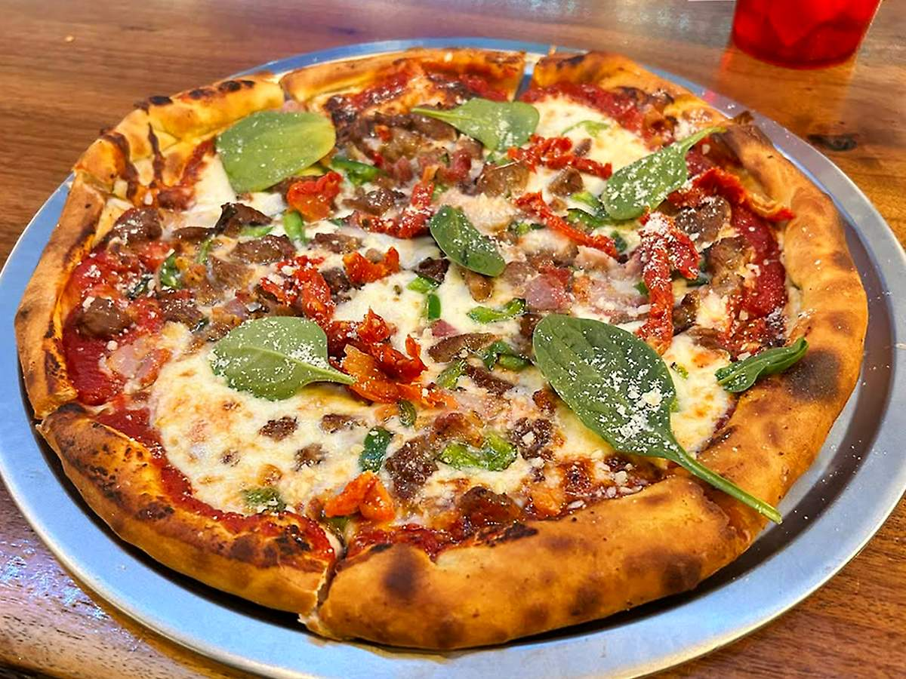
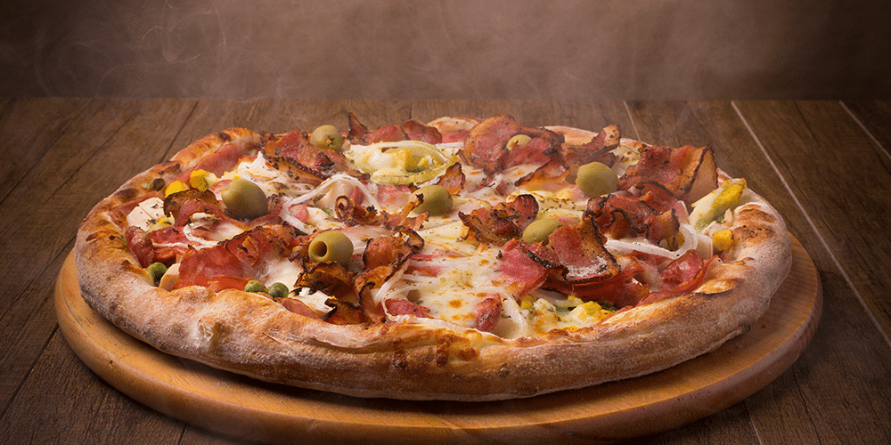

DESTAQUES🍕
| PIZZA MAIS FAMOSA | RESULTADOS | ESPECIAIS |
|---|---|---|
|
No coração da capital paulista, a pizza é mais que comida:
é tradição. Entre tantos sabores, a Margherita da Pizzaria Bráz se consagrou como a mais icônica.
Preparada com massa de longa fermentação, molho de tomates frescos, mussarela de búfala cremosa e manjericão colhido no dia, ela une simplicidade e perfeição. O resultado
é uma explosão de sabor que representa a alma paulistana e faz da cidade o verdadeiro paraíso da pizza.  |
Não é à toa que a pizza Margherita da Pizzaria Bráz conquistou fama em São Paulo. Ano após ano, ela figura entre as mais bem avaliadas pelos críticos gastronômicos e lidera listas das melhores pizzarias da cidade. O segredo está na consistência: sempre a mesma massa leve e crocante, o molho de tomates no ponto perfeito e o frescor do manjericão. O resultado? Uma experiência que ultrapassa o prato, tornando-se referência cultural e motivo de orgulho para os paulistanos — afinal, quando se fala em pizza no Brasil, São Paulo continua no topo. 
|
A Pizzaria Bráz, famosa pela Margherita, também se destaca pelos sabores especiais que conquistaram São Paulo. Entre eles, a Calabresa Artesanal com Cebola Caramelizada e a Quatro Formaggi da Casa são os mais celebrados, unindo tradição e inovação em cada fatia.  |